Contents
clear all; close all; clc;
Parametri di sistema e condizioni iniziali
Definizone di parametri
mm = 1000; % kg mc = 300; % kg cc = 5000; % N*s/m cm = 100; % N*s/m L = 2.5; % m g = 9.81; % m/s^2 xc_0 = 0; % m xc_dot_0 = 0; % m/s alpha_0 = 80 * pi/180; % rad alpha_dot_0 = 0; % rad/s
Definizione condizioni di equilibrio per linearizzazione e di tempo
dt = 0.001; tempo = 0:0.001:30; alpha_dot_eq = 0; alpha_eq = pi/2; xc_dot_eq = 0; xc_eq = 0;
Risposta libera
Si nota che le variabili non stanno oscillando ma sono costanti a meno di errori macchina
lib=sim("modello_non_lineare.slx"); alp_lib=lib.yout{1}.Values; xc_lib=lib.yout{2}.Values; figure; title("Evoluzione libera della posizione") plot(xc_lib, 'linewidth',2,'linestyle','--') xlabel('t [s]') ylabel('xc [m]') hold on figure; title("Evoluzione libera dell'angolo") plot(alp_lib,'linewidth',2,'linestyle','--') xlabel('t [s]') ylabel('alpha [rad]')
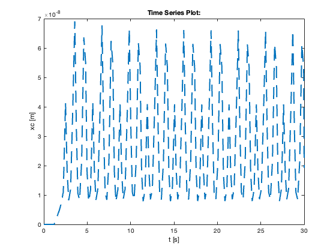
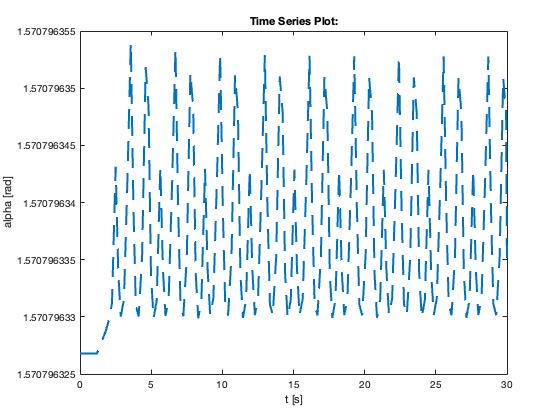
Linearizzazione
Osserviamo un picco di risonanza in alpha a 2 rad/s Mentre in xc si vede un andamento decrescente fin dalle prime frequenze, ci aspettiamo di trovare un polo nell'origine nella funzione di trasferimento che possa spiegare il comportamento da integratore
sim('modello_linearizzazione.slx');
A = modello_linearizzazione_Timed_Based_Linearization.a;
B = modello_linearizzazione_Timed_Based_Linearization.b;
C = modello_linearizzazione_Timed_Based_Linearization.c;
D = modello_linearizzazione_Timed_Based_Linearization.d;
sys = ss(A, B, C, D);
G = tf(sys);
bode(sys);
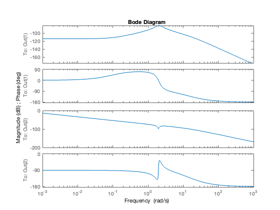
Poli e zeri
Come avevamo ipotizzato si trovano per G_x un polo nell'origine Mentre in G_alpha ci sono due coppie di poli e zeri molto vicini tra di loro, generano il picco di risonanza
Galpha = G(1, 1); Gx = G(2, 1); figure; pzmap(Galpha) figure; pzmap(Gx);
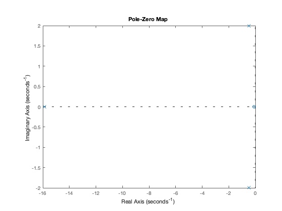
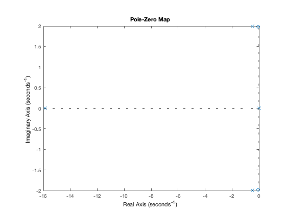
Confronto linearizzazione e non lineare
Simuliamo con una forzante identica di ampiezza di 10^4 per osservare una risposta nell'ordine dell'unità, visto che nel diagramma di Bode ci troviamo a una magnitudine di circa 80 dB su entrambi i modelli alla frequenza di risonanza (dove il grafico di bode di xc ha un picco) Infatti, è il punto di maggior criticità del sistema. Osserviamo componenti anarmoniche in modello non lineare Mentre si osservano delle curve che descrivono un andamento non periodiche piuttosto accettuante in xc dove a transitorio esaurito la risposta a forzante sinusoidale è effettivamente sinusoidale, seppur su alpha l'errore è trascurabile e segue bene il modello vero, Sarà invece da valutare ad alte frequenze cosa accade al modello lineare quando si esce dalla regione di equilibrio dove è stato definito, sopra certa soglia aumenteranno i comportamenti non lineari del carroponte.
val=sim("validazione_linearizzato.slx"); xc_l=val.xc_l; xc_nl=val.xc_nl; alp_l=val.alp_l; alp_nl=val.alp_nl; figure; title("Confronto tra le posizioni nei due modelli") plot(xc_l, ":","LineWidth",2) hold on plot(xc_nl, 'linewidth',2,'linestyle','--') legend("Posizione nel modello linearizzato", "Posizione nel modello non lineare") xlabel('t [s]') ylabel('xc [m]') figure; title("Confronto tra gli angoli nei due modelli") plot(alp_l, ":", "LineWidth", 2) hold on plot(alp_nl, 'linewidth',2,'linestyle','--') legend("Posizione angolare nel modello linearizzato", "Posizione angolare nel modello non lineare") xlabel('t [s]') ylabel('alpha [rad]')
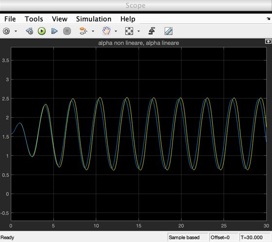
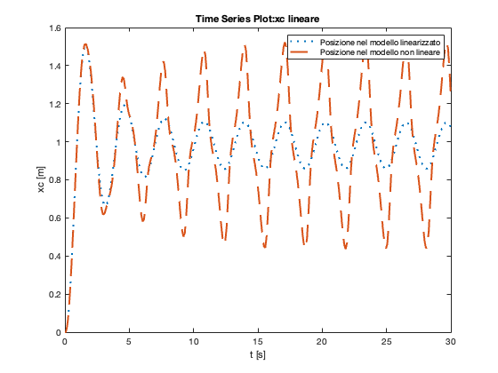
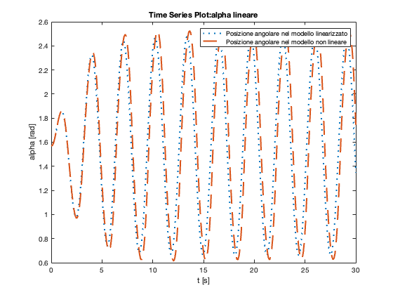
Progettazione di Controllore
Dal momento che in xc è già presente un polo nell'origine, l'azione dell'integratore di eliminare le fluttuazioni dovute all'errore è già incorporata nel sistema stesso L'uso di un controllore solo proporzionale, sebbene, spostando il grafico di bode di xc permette di avere una frequenza di taglio omega_p minore e dunque una maggiore rapidità ad arrivare alla posizione di equilibrio senza alterare la dinamica di xc, ciò comporta un certo costo nelle oscillazioni di alpha, che aumentano profondamente attorno alla risonanza. Una azione di controllo si rispecchia sulla dinamica di alpha troppo negativamente per poter accettare il controllore proporzionale. Infatti, le oscillazioni possono evolvere in una dinamica reale del sistema non lineare e influenzano anche i tempi di assestamento, contro ciò che si poteva pensare con un modello con alta risposta proporzionale. Perciò la scelta è di costruire un controllore adhoc per elominare alcune dinamiche infelici e non desiderate del sistema (lecito se ci si tiene lontano dalle regioni con parte reale positiva, ovvero divergente) Elimino poli complessi coniugati che sono più importanti
[z, p, k]=zpkdata(Gx, "v"); s=tf("s"); Numerator = (s-p(3)) * (s-p(4)); Denominator = (s-z(1)) * (s-z(2)); C = 5000 * Numerator/Denominator; figure pzmap(C)
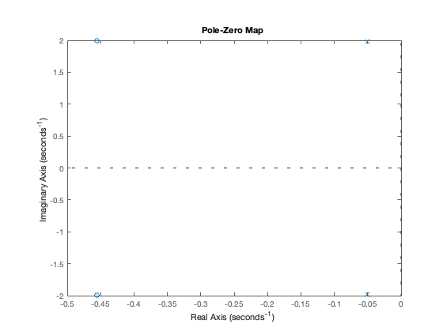
Confronto sistema con differenti Controllori
sim("modello_carroponte_controllo.slx") figure plot(tempo, xc_simulink_Forzata, "LineWidth", 2) hold on plot(tempo, xc_simulink_Proporzionale, "LineWidth", 2) hold on plot(tempo, xc_simulink_Dinamico, "LineWidth",2) hold on legend("Nessun controllo", "Controllo proporzionale", "Controllo con cancellazione di zeri e poli") title("Risposta libera di posizione") ylabel("Posizione xc [m]") xlabel("Tempo [s]") grid on figure plot(tempo, alpha_simulink_Forzata, "LineWidth", 2) hold on plot(tempo, alpha_simulink_Proporzionale, "LineWidth", 2) hold on plot(tempo, alpha_simulink_Dinamico, "LineWidth",2) hold on legend("Nessun controllo", "Controllo proporzionale", "Controllo con cancellazione di zeri e poli") title("Risposta libera di angolo alpha") ylabel("Posizione angolare \alpha [rad]") xlabel("Tempo [s]") grid on
Warning: Matching "From" for "Goto" '<a href="matlab:open_and_hilite_hyperlink ('modello_carroponte_controllo/Goto','error')">modello_carroponte_controllo/Goto</a>' not
found
Warning: Matching "From" for "Goto" '<a href="matlab:open_and_hilite_hyperlink ('modello_carroponte_controllo/Goto1','error')">modello_carroponte_controllo/Goto1</a>' not
found
Warning: Matching "From" for "Goto" '<a href="matlab:open_and_hilite_hyperlink ('modello_carroponte_controllo/Goto2','error')">modello_carroponte_controllo/Goto2</a>' not
found
Warning: Matching "From" for "Goto" '<a href="matlab:open_and_hilite_hyperlink ('modello_carroponte_controllo/Goto3','error')">modello_carroponte_controllo/Goto3</a>' not
found
Warning: Matching "From" for "Goto" '<a href="matlab:open_and_hilite_hyperlink ('modello_carroponte_controllo/Goto4','error')">modello_carroponte_controllo/Goto4</a>' not
found
Warning: Matching "From" for "Goto" '<a href="matlab:open_and_hilite_hyperlink ('modello_carroponte_controllo/Goto5','error')">modello_carroponte_controllo/Goto5</a>' not
found
Warning: Matching "From" for "Goto" '<a href="matlab:open_and_hilite_hyperlink ('modello_carroponte_controllo/Goto6','error')">modello_carroponte_controllo/Goto6</a>' not
found
Warning: Matching "From" for "Goto" '<a href="matlab:open_and_hilite_hyperlink ('modello_carroponte_controllo/Goto7','error')">modello_carroponte_controllo/Goto7</a>' not
found
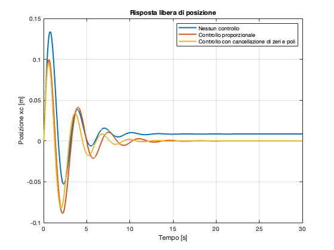
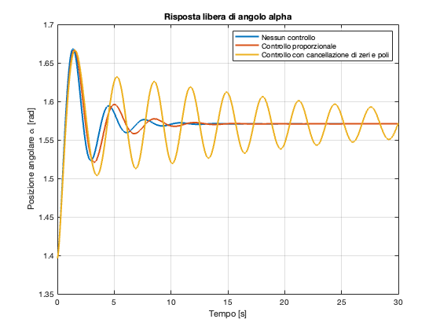
Commenti finali
Prima di tutto si osserva che senza il controllore il sistema non raggiunge la posizione di equilibrio, mantenendo fisso un certo errore. Il controllore proporzionale, seppur raggiungendo lo scopo di far tendere alla posizione di equilibrio il carroponte, manifesta delle oscillazioni piuttosto ampie, a differenza dell'ultimo controllore che ha oscillazioni molto più smorzate In ogni caso anche il miglior regolatore presenta talune oscillazioni, ciò avviene perché, nel risolvere i comportamenti oscillatori abbiamo cancellato i poli e gli zeri del sistema linearizzato, mentre la dinamica reale non lineare è approssimata, cioé in definitiva non stiamo esattamente eliminando i nodi del problema ma ci siamo solo arrivati vicini Risultati simili non valgono in relazione alla seconda variabile Infatti al netto di avere migliorato l'assestamento di xc, abbiamo ottenuto una leggera oscillazione di alpha attorno al punto di equilibrio. In definitiva, la soluzione possiamo dire essere convincente perché a fronte di una limitata sovraelongazione e un tempo di assestamento decisamente migliore, il costo da pagare di tale operazione è un oscillazione di alpha limitata